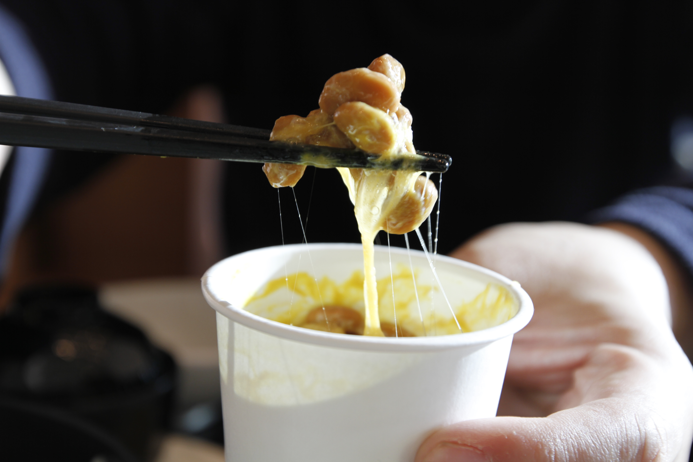
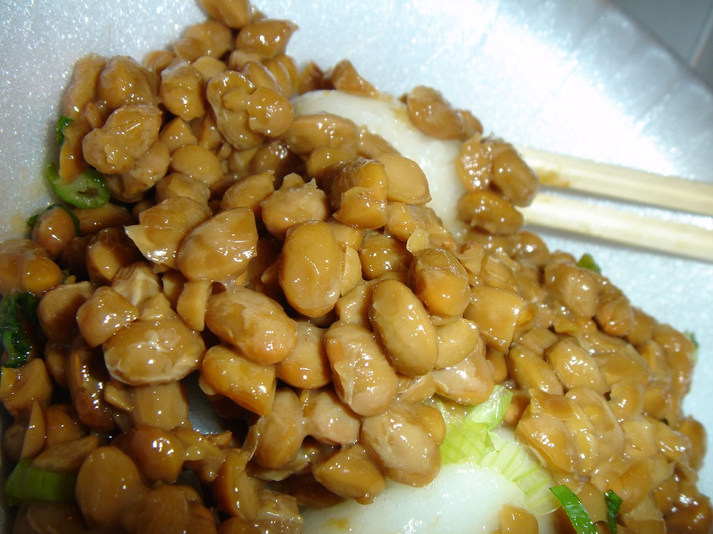

The more stir, the more delicious it becomes!
 The best way to eat natto is to pull a string and knead it well so that it contains air. If you are not accustomed to eating natto, the problems are that the bowl and table are soiled by the peculiar stretched and torn threads, and that it is difficult to eat.
 TIt is not preferable to add sauce before mixing the natto. It will be over-hydrated and will not be very sticky. As a kind of idea product, a special stick for mixing natto is also sold.
 Natto is rich in vitamin K and soy-derived protein, and is still a high-quality protein source.
It is also rich in dietary fiber. Bacillus natto is called probiotics and is also thought to be useful for the intestinal environment.
Natto has an antibacterial effect and has an effect of suppressing the growth of pathogenic Escherichia coli.
Natto is rich in vitamin K and soy-derived protein, and is still a high-quality protein source.
It is also rich in dietary fiber. Bacillus natto is called probiotics and is also thought to be useful for the intestinal environment.
Natto has an antibacterial effect and has an effect of suppressing the growth of pathogenic Escherichia coli.